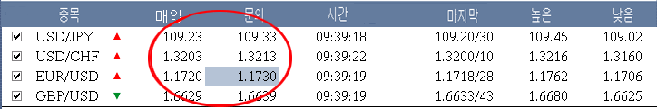
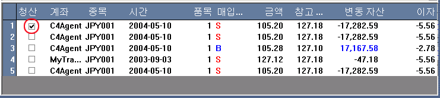
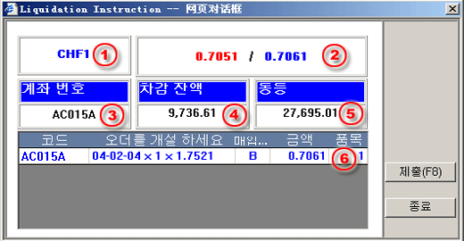

현물/현품 주문 방법
거래 플랫폼은 실시간, 연속적인 견적을 통해 순간적으로 거래할 수 있는 능력을 제공하게끔 설계되고 만들어져 있다. 현재 입찰/요구 가격이 아래에 나타나 있는 거래패널에 나와 있고, 사용자는 언제라도 현재의 입찰이나 제공을 클릭하여 순간적으로 거래을 행할 수 있다. 살아 있는 양방향간 가격으로부터의 순간적 실행을 제공함으로써, 사용자는 “시장에서” 유용한 가격에 대해 항상 확실히 할 수 있다. 살아 있는 견적으로부터 행함으로써, 투자가는 익명의 잇점을 제공받을 수 있고 보다 신속하게 행할 수 있으며, 보통 실행 시간은 초 이내이다.
현물 주문 방법:
거래 패널은 실제 가격 전망과 주문 실행법을 제공해 준다. 사용자는 언제라도 현재 입찰가를 클릭하거나 주문가를 물어 볼 수 있다.
|  |
| 1 | 주문에 대한 거래계기 코드 |
|
|
| 2 | 주문에 대한 거래 계좌 | ||
| 3 | 거래할 계약량 입력 | ||
| 4 | 시장으로부터의 실제 견적 | ||
| 5 | 계좌상의 개방 구입 계약들 리스트 | ||
| 6 | 계좌상의 개방 판매 계약들 리스트 | ||
| 7 | 청산에 대한 계약수 입력 | ||
| 8 | 제공가로 무역할 구입/판매 버튼 | ||
| 9 | 정산 목적으로 입력된 모든 물량 취소 | ||
| 10 | 주문하기 대화창 퇴장 |
오픈 주문 리스트를 통해 행해진 주문은 정산 목적이다. 사용자가 어떤 주문을 정산하고 싶으면, 결재 마크를 체크하고 그 주문을 마우스로 클릭하면 된다.
|  |
사용자는 단일 견적상에서 정산을 위한 같은 기구에 대한 다수의 주문을 체크해도 된다. 주문을 클릭하면, 정산 안내 대화창이 나타난다:
| 1 | 주문에 대한 거래 기구/계기 코드 |  |
| 2 | 시장으로부터의 실제 움직이는가격 | |
| 3 | 선택된 주문에 대한 거래 계좌 | |
| 4 | 선택된 주문에 대한 거래 계좌의 잔액 | |
| 5 | 선택된 주문에 대한 거래 계좌의 순(수)가(격) | |
| 6 | 정산에 대한 계약수, 사용자는 원하면 수량을 조절할 수 있다. |
사용자는 가격이 수락할만하다고 생각하면, 주문 신청 완결을 위해 신청 버튼이나 F8을 클릭하면 된다.